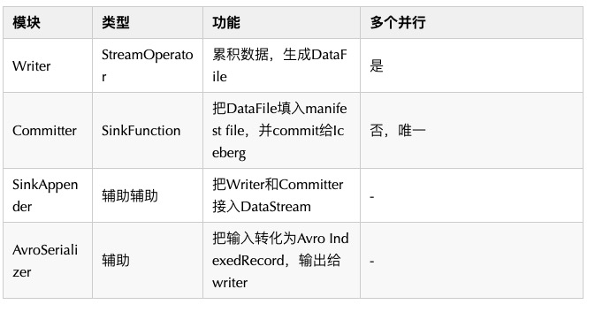

iceberg
大数据处理平台里的n多名词对我来说都很陌生，😔这篇主要是普及的东西，还没有形成自己的体系很乱有些东西也还没来得及写上去，持续补充…..
Hadoop（分布式系统基础架构）
一个开源的分布式计算框架，允许使用简单编程模型跨计算机集群处理大型数据集合的框架，设计初衷是将单个服务器扩展成上千个机器组成的一个集群为大数据提供计算服务。
Spark（计算引擎）
Spark其实是最初的MapReduce计算引擎的二代版，优化了抽象层次低，中间结果难复用，交互性不好等问题
用于Hadoop数据的快速通用计算引擎，在大的Hadoop中的优势如下：
- 速度快
- 易用性：可以使用java，Scala，Python，R以及SQL快速写Spark应用
- 通用性：支持SQL，流数据处理及复杂分析
- Spark SQL DataFrame API: 统计计算时，最常接触的部分
- Spark Streaming: 流式计算，也可被用作数据集成工具，DataFlow 数据集成部分的实现载体
- Spark Mlib: 机器学习部分，主要是统计学习相关，特征工程/分类/聚类/回归/频繁模式 …
- Spark GraphX: 图计算相关，标签传播
- 支持多种模式运行：Hadoop，Kubernete，云等
Scala（语言）
一种语言，支持Spark（但Spark可以使用多种语言进行交互）
HDFS（Hadoop Distributed File System）
它是Hadoop兼容最好的标准级文件系统
Hive
提供数据汇总和特定查询的数据仓库
Kudu
列式存储，偏向于实时计算 OLAP
HBase
列式存储，偏向于海量事物 OLTP
Impala/Presto
内存计算MPP引擎，比 Spark 有速度&并行查询优势
Flink
比 Spark 做的更好的流计算。
流式模式：
- 延迟短
- 数据完整度较差：因为流式引擎不会等到所有数据到齐后再计算，有一个watermark的概念，当数据的时间小于watermark时就会被丢弃。在大部分场景中，用户需要开发两个程序，一是流式数据生产流式结果，二是批式计算任务，用于次日修复实时结果
- 成本高
批式模式：小时任务或者天任务来做数据计算
- 延迟：小时级或者天级别的延迟
- 数据完整度较高
- 成本低
Copy-On-Write Table
对于 Copy-On-Write Table，用户的 update 会重写数据所在的文件，所以是一个写放大很高，但是读放大为 0，适合写少读多的场景。对于这种 Table，提供了两种查询：
- Snapshot Query: 查询最近一次 snapshot 的数据，也就是最新的数据。
- Incrementabl Query:用户需要指定一个 commit time，然后 Hudi 会扫描文件中的记录，过滤出 commit_time > 用户指定的 commit time 的记录。
Merge-On-Read Table
对于 Merge-On-Read Table，整体的结构有点像 LSM-Tree，用户的写入先写入到 delta data 中，这部分数据使用行存，这部分 delta data 可以手动 merge 到存量文件中，整理为 parquet 的列存结构。对于这类 Tabel，提供了三种查询：
Snapshot Query: 查询最近一次 snapshot 的数据，也就是最新的数据。这里是一个行列数据混合的查询。
Incrementabl Query:用户需要指定一个 commit time，然后 Hudi 会扫描文件中的记录，过滤出 commit_time > 用户指定的 commit time 的记录。这里是一个行列数据混合的查询。
Read Optimized Query: 只查存量数据，不查增量数据，因为使用的都是列式文件格式，所以效率较高。
当 Flink 程序执行时，其被映射成 Streaming Dataflow，由如下的部分组成：
- Source (operator)：接收外部输入给 Flink；
- Transformation (operator)：中间对 stream 做的任何操作；
- Sink (operator)：Flink 输出给外部。
Druid
预聚合CUBE引擎
ElasticSearch（搜索分析引擎）
是一个分布式的开源搜索和分析引擎，适用于所有类型的数据，包括文本、数字、结构化和非结构化数据。
iceberg（数据湖框架）
什么是数据湖框架？其实是一种对仓库中数据的管理框架，之前使用的大多是Hive，但是单一使用它作为数仓不能满足对数据存取效率的要求，现在出来的常用的三个开源软件Delta Lake，Apache Hudi和Apache iceberg都指向对Hive的改良，既提供一个数据仓库的功能，同时还给仓库配上标签信息、监控工具、智能运输等功能。其中iceberg就专注于用iceberg table来统一所有的table
iceberg可适配Spark等引擎提供高性能的读写和元数据管理功能，介于计算引擎之下存储引擎之上的一种数据存储组织格式。
Q：隐式分区怎样做到的
流式计算checkpoint
Streaming Write的模板代码
1 | val tableIdentifier: String = ... |
文件存储的方式：哈希，csv，parquet，orc，Avro（向量化读取方式统一）
参考链接
https://www.cnblogs.com/wing1995/p/9300120.html